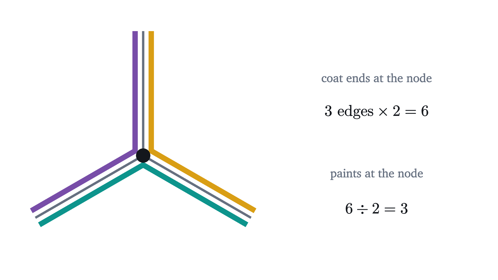
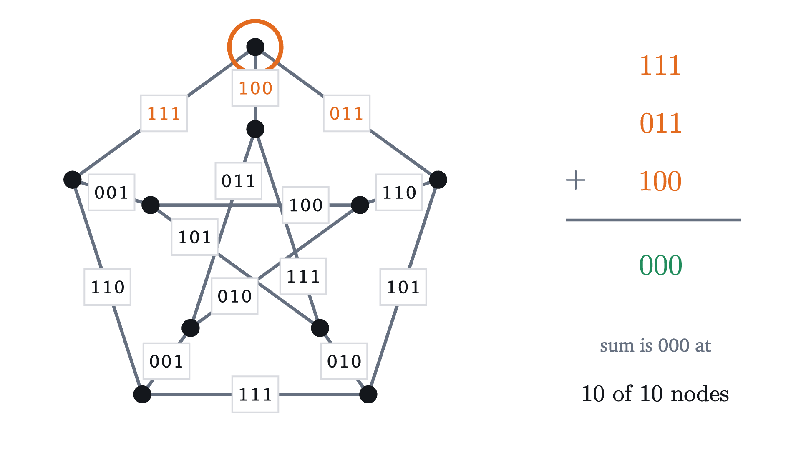
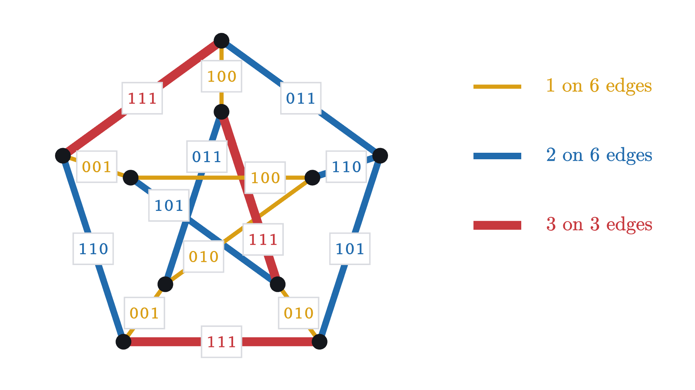

The cycle double cover conjecture, and its proof
Every bridgeless graph has cycles that use each edge exactly twice. The whole proof, from bridges and paint to three-bit labels and a parity count.
AssumesBridges of Königsberg: Euler paths and circuitsClock arithmetic: modular arithmetic and why it works
Here is the graph formed by the corners and edges of a cube, pressed flat onto the page. I want to lay cycles on it, closed routes that never pass through a node twice, so that every edge is used by exactly two of them. For the cube there is an easy way, which is to take the boundary of each face. Pressed flat, the cube shows five faces and has a sixth around the outside, and every edge lies between two faces, so the six boundaries together use every edge exactly twice.
Whether this can be done on every graph was an open question for at least fifty years. One kind of edge plainly prevents it, and the cycle double cover conjecture said that nothing else does. In July 2026 OpenAI published a proof found by one of its models, so the conjecture is now a theorem. The argument is short enough to go through completely, using nothing beyond the arithmetic of odd and even.
The proof has four moves. The first reduces the problem to graphs with three edges at every node. The second trades cycles for paint: every cycle gets its own paint, and a cover becomes a rule that can be checked at one node at a time. The third writes each paint as a code of bits, so that every edge gets a label recording how its two coats differ, and a theorem of Jaeger and Kilpatrick from the 1970s says that labels of the right kind exist on every bridgeless graph. The fourth is the new one. It gets back from the labels to paint by letting each node choose its paints separately, and a count of odd and even shows that the choices can be made to fit together.
Graphs, cycles and double covers
The proof will count edges at nodes, so the definitions have to be exact.
Parallel edges are allowed because one of the simplifications below creates them. The clause to remember is that the nodes of a cycle are all different: a cycle that visits a node arrives by one edge and leaves by another, so it uses exactly two of the edges at that node.
For the cube the six face boundaries have four edges each, which makes $6 \times 4 = 24$ uses of an edge, and the cube has 12 edges, each used twice.
Pause and try
The graph $K_4$ has four nodes $a, b, c, d$ and an edge between every two of them, six edges in all. Find a cycle double cover of $K_4$. Then find a second one with a different number of cycles.
Show answerHide answer
The four triangles $abc$, $abd$, $acd$, $bcd$ work: the edge $ab$ lies on the two triangles that contain both $a$ and $b$, and the same holds for every edge. So do the three cycles of length four, $abcd$, $abdc$ and $acbd$: the cycle $abcd$ misses only the edges $ac$ and $bd$, the cycle $abdc$ misses $ad$ and $bc$, and $acbd$ misses $ab$ and $cd$, so each edge is missed by one of the three and used by the other two. Both lists use an edge $12 = 2 \times 6$ times.
Bridges are the obvious obstacle

The figure suggests that no cycle can use a bridge. That is true, and so is the converse, which we will need more often.
So a graph with a bridge has no cycle double cover: the bridge would have to lie on two cycles and lies on none. The conjecture is that this is the only thing that can go wrong.
This statement is the goal. Everything in the proof will be shown in full except the theorem of Jaeger and Kilpatrick, which is stated exactly and sketched when we reach it.
A graph with no faces to use
The face trick needs a drawing in which no two edges cross, so that there are faces. For a bridgeless graph drawn that way the method always works, after some care in the cases where a face boundary passes through a node twice. The graph below has no such drawing. (I will not prove that, and nothing later depends on it.) It is called the Petersen graph, and ideas about cycles are tested on it first because so many of them fail there.

Graphs come in every shape, which makes them hard to reason about. Before attacking the Petersen graph we tidy the problem twice.
Reducing to three edges at every node
The first simplification is a reduction: we replace the problem by a narrower one and show that solving the narrower one solves everything.
The cube, $K_4$ and the Petersen graph are all cubic. The claim is that these are the only graphs we need to handle.
The idea is to change a graph one node at a time until it is cubic, in such a way that a cover of the new graph can be turned back into a cover of the old one. A node of degree 4 or more gets pulled apart.

There is a catch. Pulling a node apart can create a bridge, and then the new graph has no cover to hand back.
Pause and try
The four edges at a node can be sorted into two pairs in three ways. In the graph below, two triangles share the middle node. Which of the three pairings turns the new edge into a bridge?
Show answerHide answer
Only one: the pairing that puts both edges of the left triangle on one new node and both edges of the right triangle on the other. Then the new edge is the only connection between the two triangles. The other two pairings put one edge of each triangle on each new node, and the new edge lies on a cycle that goes out through one triangle and back.

The proof has to show that a good pairing always exists, and it has to deal with nodes of degree 2 as well.
From here on, every graph is cubic and bridgeless.
Trading cycles for paint
The second simplification changes what we search for. A cycle is awkward to hunt for, because whether a set of edges forms one cannot be checked by looking at one node. So give every cycle of a cover its own paint, and paint the edges it runs along. Two things are then true. Every edge has two coats, in two different paints. And at every node, each paint is on exactly two of the edges there, because its cycle arrives by one edge and leaves by another, or on none, because its cycle misses the node.
Both rules can be checked one edge and one node at a time. The question is whether they are enough.
Pause and try
Suppose someone hands you a painting, and you want cycles. Stand on an edge that has some paint, walk to its end, and look for the same paint on another edge. Why is there exactly one choice? And why can the walk not run into a node it has already left, other than its starting node?
Show answerHide answer
At the node you arrive at, the paint is on exactly two edges, the one you came along and one other, so the way on is forced. If the walk arrived at a node it had already passed through, that node would have the paint on three edges: the two used on the first visit and the one used to arrive now. That is against the rule. Since the graph is finite, the walk must repeat a node eventually, and the only node it can repeat is the one where it started.
So for the rest of the proof we look for a painting. In a cubic graph the rules pin down what a painting looks like at a single node.

Check yourself
In a painting of a cubic graph, two of the three edges at a node carry the coats $\{1, 2\}$ and $\{2, 3\}$. What are the coats on the third edge?
Three colors give three paints
For some cubic graphs a painting can be read off from a different and much older kind of coloring.
A coloring is not a painting. A coloring puts one color on an edge, and a painting puts two coats on it. Here is how one turns into the other on $K_4$.
The Petersen graph has no 3-edge-coloring
If every bridgeless cubic graph had a 3-edge-coloring we would be finished. Try it on the Petersen graph, starting with the outer ring.
Pause and try
The outer ring has five edges. In a 3-edge-coloring, two ring edges that share a node have different colors. Show that some color is used on exactly one ring edge.
Show answerHide answer
Two colors are not enough: going round the ring they would have to alternate, and after five edges the last would match the first, which it touches. So all three colors appear. A single color cannot be on three ring edges, because among any three of the five edges two share a node. So each color is on at most two edges, and the only way three colors can fill five edges is two, two and one.

A computer search agrees: the ring can be colored in 30 ways, and none of the 30 can be completed. Cubic bridgeless graphs with no 3-edge-coloring are called snarks, and the Petersen graph is the smallest.
So three paints are not always enough, and the Petersen graph needs more. (A theorem recorded in François Jaeger’s 1985 survey says that a cubic graph with a painting in four paints also has one in three, so the Petersen graph needs at least five. One of the problems at the end proves the three-paint half of that.)
With more than three paints there is no coloring to start from, and searching for all the paint at once is hopeless. The remaining two moves split the job.
- For every edge, forget which two paints it has and record only how the two differ.
- Rebuild the paints from the differences.
That only makes sense if paints are things that can be subtracted, so the first task is to choose the right kind of number.
Arithmetic that only remembers odd and even
Look again at the rule for a painting: at a node, a paint is on two edges or none, never on one or three. The rule only cares whether a count is odd or even. So we use the arithmetic that remembers nothing else. It has two numbers, 0 for even and 1 for odd, and its addition table says that even plus odd is odd and odd plus odd is even:
This is arithmetic modulo 2. One bit can tell only two paints apart, so we use several bits side by side.

Three facts about this addition carry the rest of the argument, and each can be read off one column at a time.
- A code added to itself gives zero: $x + x = 0$, because $0 + 0 = 0$ and $1 + 1 = 0$. So adding $x$ twice does nothing, and subtracting $x$ is the same as adding it.
- The sum of two codes shows where they disagree: a column of $x + y$ is 1 exactly when $x$ and $y$ differ there. So $x + y$ is also the difference between $x$ and $y$, and $x + y = 0$ exactly when $x = y$.
- Order and grouping do not matter, since that is true of addition in each column.
Pause and try
Compute $110 + 011$. Then find the code $c$ with $101 + c = 011$, without trial and error.
Show answerHide answer
Column by column, $110 + 011 = 101$. For the second, add $101$ to both sides: the left side becomes $101 + 101 + c = c$, so $c = 101 + 011 = 110$. The code that turns one code into another is their sum.
Difference labels
Now let the paints be codes, and carry out step 1 on a painting we already have. The 3-edge-coloring of $K_4$ gave three paints. Name them 00, 01 and 10.
So on $K_4$ the color of an edge was a record of how its two paints differ. Now look at what the labels do at a node.
Pause and try
At the top left corner of the square the three labels are 01, 11 and 10. Add them. Do the same at another corner. Then explain the result, using the fact that the three edges at a node carry three paints $a, b, c$, one shared by each pair of edges.
Show answerHide answer
$01 + 11 + 10 = 00$, and every other corner has the same three labels. The reason: the three edges have coats $\{a, b\}$, $\{b, c\}$ and $\{c, a\}$, so their labels are $a + b$, $b + c$ and $c + a$. In the sum of the three, each paint appears twice, and a code added twice is zero.
Nothing in that explanation used $K_4$ or two bits.
Both properties are checked at one edge or one node at a time, with no mention of paint. That is the point of step 1: labels can be hunted for directly, and they are far easier to find than paintings.
The name comes from a more general setting in which labels are numbers that flow along directed edges, with as much flowing into each node as out of it. With codes, $x = -x$, so no directions are needed. In the literature the set of $k$-bit codes with this addition is written $\mathbb{F}_2^k$ or $\mathbb{Z}_2^k$.
Two bits are the three colors again
How many bits do the labels need? Try two.
Pause and try
In a nowhere-zero two-bit flow on a cubic graph, can two of the three edges at a node have the same label?
Show answerHide answer
No. If two of them were $x$ and $x$, they would add up to 0, and the third label would have to be 0 for the three to add up to 0. That is not allowed.
So two-bit flows and 3-edge-colorings are the same thing, and the Petersen graph, which has no 3-edge-coloring, has no nowhere-zero two-bit flow.
Three bits are always enough
With a third bit there are eight codes for paints and seven possible labels. Here the 1970s supply a theorem.
P. A. Kilpatrick proved this in a 1975 thesis at the University of Cape Town, and François Jaeger found it independently, in work presented in 1975 and published in 1976 and 1979. It is known as the 8-flow theorem, because by a 1954 theorem of W. T. Tutte a graph has a nowhere-zero flow with values in a commutative group of eight elements, such as the three-bit codes, exactly when it has one whose values are nonzero whole numbers between $-7$ and $7$, flowing along directed edges. We will use the theorem without proving it, and a sketch of where it comes from follows below.
Here is such a flow on the Petersen graph. At the top node the labels are 111, 011 and 100: the first column holds $1, 0, 1$, the second $1, 1, 0$ and the third $1, 1, 0$, and each of those adds up to an even number.

Check yourself
Two of the three edges at a node of a cubic graph have labels 101 and 110 in a nowhere-zero three-bit flow. What is the third label?
Why the theorem is believable: a sketch
This part is a sketch. It proves everything except one cited theorem about trees and one reduction, and I will say where those are.
Read a three-bit labeling one column at a time. The first column selects some edges, those whose first bit is 1. The labels at a node add up to 0 in that column exactly when the node has an even number of selected edges. And a label is different from 000 exactly when its edge is selected by at least one column. So a nowhere-zero three-bit flow is the same thing as three sets of edges, each meeting every node an even number of times, that together contain every edge. The next figure draws the three sets for the labeling above.
Sets of edges that meet every node an even number of times are easy to make from a spanning tree, which is a set of edges that connects all the nodes and contains no cycle.
Here is why that works for any spanning tree $T$ of any connected graph. An edge $e$ outside $T$ closes exactly one cycle $C_e$ with it, namely $e$ together with the route through the tree between its ends. Let $S$ be the set of edges that lie on an odd number of the cycles $C_e$. Each cycle meets each node in two edges or none, so adding up over all the cycles, each node meets an even number of edge uses, and therefore an even number of edges that are used an odd number of times. And each outside edge lies on exactly one of the cycles, its own, so it belongs to $S$. Thus $S$ meets every node an even number of times and contains every edge outside $T$.
Now suppose we have three spanning trees with no edge in all three. Each tree gives a set $S$, and each edge is outside at least one of the trees, so it lies in at least one of the three sets. Those three sets are a nowhere-zero three-bit flow.
The existence of three such trees is the part I am citing. Call a graph 3-edge-connected if it stays connected when any two edges are deleted; the Petersen graph is an example. Replace each edge of such a graph by two parallel edges. The doubled graph stays connected when any five edges are deleted, and a theorem of Tutte and Nash-Williams from 1961 then provides three spanning trees that share no edges. Back in the original graph, no edge is in all three trees, because it had only two copies. For bridgeless graphs that are not 3-edge-connected a further reduction is needed, which I omit.
For the Petersen graph nothing has been left out: the labeling in the figures is the one that three particular spanning trees produce, and the figure above shows the first of them.
The stripes are not the cycles we want
The three columns give three sets of cycles, and every edge is on at least one of them. It is tempting to hope that they are the cycle double cover. Count how many of the three run along each edge.

Six edges have one, six have two and three have all three. For decades the labels were used in this direct way, by picking out cycles one combination of columns at a time, and some edges were always reached too often. The best result of that kind is from 1983: Jean-Claude Bermond, Bill Jackson and François Jaeger took all seven combinations of the three sets and showed that every edge lies on exactly four of them. (One of the problems at the end asks you to prove it.) Four times is not twice.
The stripes are still what makes the labels exist. The idea that was missing is to read a label as the theorem on labels of a painting suggests: as the difference between the two coats of its edge.
Back from labels to paint, at one node
Now for step 2. Suppose we are handed a nowhere-zero flow and want a painting whose labels are that flow. At a single node there is nothing to it.

The three paints at a node form a triangle among the codes, and the only freedom is to move the whole triangle. Stated without reference to a starting sector:
I will call $s$ the slide of the node. In words, the paint between two edges is the slide plus the label of the third edge, and sliding by $t$ adds $t$ to all three paints. With three bits the codes sit at the corners of a cube, and the triangle has eight positions.
The pieces do not fit by themselves
Let every node choose a slide and paint its own half of each of its three edges. Each edge is then painted twice, once from each end, and we have a painting exactly when the two halves of every edge carry the same two paints.
With two-bit labels this takes care of itself. Give every node the slide 00. The half of an edge labeled $x$ gets the labels of the other two edges at its node, and by the theorem on two-bit flows those are always the two nonzero codes other than $x$. Both ends agree, on every edge. This is the painting that Szekeres’s theorem builds from a 3-edge-coloring, with its paints renamed: the paint called 01 is on exactly the edges labeled 10 and 11, which is the cycle formed by two of the three colors.
With three bits the two ends of an edge see different neighbors, and nothing forces them to agree.
There are eight slides at each of ten nodes, $8^{10}$ settings in all, which is more than a billion, and fixing edges one at a time moves the trouble around. More to the point, we want an argument for every graph and every labeling.
So here is exactly what is established and what is missing. Every bridgeless cubic graph has a nowhere-zero three-bit flow (Jaeger and Kilpatrick, cited). At each node, the paintings of its three half-edges that fit the labels are known completely: there are eight, one for each slide. What is missing is a reason why the slides can always be chosen so that the two halves of every edge agree. That was the open half for fifty years, and the rest of the argument proves it.
A toy problem: a ring that must alternate
Before the real problem, here is one where the answer is visible at a glance, so that we can watch a method work. Color the edges of a ring of six nodes orange and blue so that the colors alternate. Let every node solve its own small problem: it colors the half-edge on one side orange and the half on the other side blue. Its only choice is which way round.
Now try the same with five nodes.

Pause and try
Before reading on: an edge whose halves agree has how many orange halves? What does that say about the total number of orange halves if every edge agrees? Compare with what the nodes supply.
Show answerHide answer
An edge that agrees is orange on both halves or blue on both, so it has two orange halves or none. If every edge agreed, the orange halves would come in twos and their total would be even. But each node colors exactly one half orange, whatever its choice, so a ring of $n$ nodes has exactly $n$ orange halves. With $n = 5$ that is odd, so not every edge can agree. With $n = 6$ the count is even and nothing stands in the way.
The same argument can be written with equations, which is the form we will need. Record each node’s choice as a bit, saying on which side its orange half lies. Call the bits $a, b, c, d, e$ around the ring of five. An edge agrees when the choices at its two ends are different, which for bits means that they add up to 1.

Add the five equations. On the left every unknown appears twice, and anything added twice is 0. On the right there are five 1s, which add up to 1. The sum reads $0 = 1$. The choices have dropped out, and what remains is the odd number five. No choice of bits can satisfy all five equations, since it would satisfy their sum.
Look at how the method went. Each node solved its own problem, with one free choice. The constraints were between neighbors only. Whether a solution for the whole ring exists came down to whether those constraints are compatible, and incompatibility showed up as a sum of equations reading $0 = 1$.
Equations between bits fail only by adding up to 0 = 1
An equation between bits is linear if it says that the sum of some of the unknowns equals 0 or equals 1. For systems of such equations, the ring of five shows the only thing that can go wrong.
This is elimination, as taught for ordinary systems of equations, carried out with bits. It turns the question “is there a solution?” into the question “can the equations be added up to $0 = 1$?”, and the second question can be attacked by counting.
Agreement written as equations
Back to the graph, where each node paints its half of each of its edges with its slide plus the labels of the other two edges. Fix a cubic graph and a nowhere-zero three-bit flow, and write $f(e)$ for the label of the edge $e$ and $s_v$ for the slide of the node $v$. For a node $v$ and an edge $e$ at $v$, let $c(v, e)$ be the label of one of the other two edges at $v$; pick either, once and for all. The other one is then $c(v, e) + f(e)$, because the three labels at $v$ add up to 000. So the half of $e$ at $v$ carries the two paints
Pause and try
Let $p \neq 000$. Two pairs $\{A, A + p\}$ and $\{B, B + p\}$ are the same pair exactly when $A + B$ takes one of two values. Which two?
Show answerHide answer
The pairs are equal exactly when $A$ is one of $B$ and $B + p$ (the other member, $A + p$, is then the other one). That means $A + B = 000$ or $A + B = p$.
Apply this to an edge $e$ joining $u$ and $v$, with $A = s_u + c(u, e)$ and $B = s_v + c(v, e)$ and $p = f(e)$. Writing $d_e = c(u, e) + c(v, e)$, which is a known code, the two halves of $e$ agree exactly when $s_u + s_v + d_e$ is $000$ or $f(e)$. Introduce one more unknown bit $\varepsilon_e$ to say which.
Each of these is an equation between codes, so it is three equations between bits, one for each column. The unknowns are the three bits of each slide and the bit $\varepsilon_e$ of each edge, and every equation is linear. For the Petersen graph that makes 45 equations in 45 unknowns. By the theorem on the only obstacle, a solution exists unless some of these equations add up to $0 = 1$.
Adding up some of the equations
To describe a selection of equations we say, for each edge, which of its three columns are taken. Record that as a code $r_e$ with a 1 in each chosen column, and $000$ if none of that edge’s equations are taken.
Two rules follow column by column: $r \cdot (w + w') = r \cdot w + r \cdot w'$ and $(r + r') \cdot w = r \cdot w + r' \cdot w$. Also, $r \cdot w = 1$ for some $w$ forces $r \neq 000$.
Adding up the chosen columns of the equation of $e$ gives $r_e \cdot s_u + r_e \cdot s_v + \varepsilon_e \,(r_e \cdot f(e)) = r_e \cdot d_e$. Now add over all edges and ask when every unknown cancels. The unknown $\varepsilon_e$ occurs only in the equation of $e$, multiplied by $r_e \cdot f(e)$. A bit of the slide $s_v$ occurs in the equations of the three edges at $v$, and it cancels when the codes $r_e$ of those three edges have an even number of 1s in its column.
These are exactly the ways of adding up equations so that all unknowns cancel. What is left is $0 = \sum_e r_e \cdot d_e$, the sum over all edges. So the whole problem is now this: show that for every selection, the bits $r_e \cdot d_e$ add up to 0 and never to 1.
Since $d_e = c(u, e) + c(v, e)$, each edge contributes two bits, one for each of its halves. Call $r_e \cdot c(v, e)$ the bit of the half-edge of $e$ at $v$. (It does not depend on which of the two other labels was picked as $c(v, e)$, because they differ by $f(e)$ and $r_e \cdot f(e) = 0$.) Then
and we can add those up one node at a time, as we counted orange halves on the ring.
What one node supplies
What the bit of a half-edge measures
It helps to see these bits before computing with them. Take a label $p$ and a code $r \neq 000$ with $r \cdot p = 0$. The eight paints fall into four pairs that differ by $p$, and the two paints of a pair have the same dot product with $r$. So $r$ splits the eight paints into two groups of four without splitting any pair, and the bit of a half-edge says in which group its pair of paints lies. The edge’s equation, tested with $r$, says that both halves lie in the same group.

With two-bit labels the picture is smaller and can be drawn on the graph. There are four paints, an edge labeled $p$ can carry one of two pairs, and exactly one of those pairs contains the paint 00. So for the one nonzero $r$ with $r \cdot p = 0$, the bit of a half-edge says whether its pair is the one without 00. Mark those halves with a tick across the edge.
This is the ring again, with one difference. On an edge that agrees, the ticks come in twos, so a solution needs an even number of ticks. The nodes supply an odd number each, as the nodes of the ring supplied one orange half each. But a cubic graph always has an even number of nodes, so here the supply is even and nothing stands in the way. With three bits there are more selections than this one, and we need to know what a node supplies in each.
The count at a node
The proof needs one fact about codes.
Notice what happened to the slides. A node may slide its paints in eight ways, and the bit of each half-edge is computed without them: they cancelled when we added up the equations. On the ring every node supplied one orange half however it was flipped. Here a node supplies, as odd or even, as many as it has selected edges.
Every edge has two ends
The lesson on Euler paths uses the same count for all the edges of a graph.
Pause and try
A selection has ten selected edges. Knowing nothing else about it, what do the numbers of selected edges at the ten nodes add up to?
Show answerHide answer
Twenty. Each selected edge ends at two nodes and is counted once at each.
Everything is now in place.
The Petersen graph, solved
Solving the 45 equations for the Petersen graph, by elimination, tells each node how far to slide. In the next figure the nodes take up their slides one at a time.
With all ten slides in place, each paint can be followed along the graph.
A computer search over all slides finds 16 solutions for this labeling. Adding the same code to every slide turns a solution into another, which accounts for a factor of 8, so there are two kinds. One is shown. The other uses only five paints, whose cycles have 5, 5, 5, 6 and 9 edges.
The whole proof
Who proved what, and what is open
George Szekeres stated the conjecture in 1973 for graphs with three edges at every node, and Paul Seymour stated it in 1979 for all bridgeless graphs. Alon Itai and Michael Rodeh gave an equivalent form in 1978. In a 1987 letter W. T. Tutte wrote that the question had been passed around in conversation long before anyone printed it, and OpenAI’s note also credits him. The reduction to cubic graphs and the painting from a 3-edge-coloring are classical. The flow theorem is due to P. A. Kilpatrick (1975) and François Jaeger (1976, 1979). In 1983 Bermond, Jackson and Jaeger built from the flow seven sets of cycles covering every edge four times.
The new step is the theorem from a flow to a painting: read each label as the difference between two paints, let every node slide its triangle of paints, and notice that agreement between neighbors is a matter of adding bits. OpenAI published it in July 2026 in a note of under three pages, which states that the proof is entirely due to its model GPT 5.6 Sol Ultra. The prompt, also published, told the model to assume that a complete proof exists and to keep working for at least eight hours. OpenAI has also released a formalization of the theorem, for graphs as defined at the start of this essay, that the Lean proof assistant checks. Jim Geelen and Sang-il Oum each wrote the argument out in their own way within weeks; the symmetric choice of paints at a node and the form of the count at a node used here follow Oum’s exposition. A paper by Shiva Kintali, posted the same week as OpenAI’s note and written with OpenAI’s Codex, gives a proof along the same lines starting from Seymour’s 6-flow theorem.
The subject is not finished. This construction can use up to eight paints. Uldis Celmins and Myriam Preissmann conjectured in the 1980s that five are always enough, and that five cycle double cover conjecture is still open.
The idea worth keeping is the one the ring showed. Solve the problem at every node separately. Write what neighbors must agree on as differences. Differences add up, and what adds up can be counted.
Check yourself
In a selection, how many of the three edges at a node can be selected?
Problems
The problems follow the order of the argument. Problems 1 to 7 are about covers, bridges and paint, problems 8 to 15 about codes, labels and flows, and problems 16 to 22 about the equations and the count at a node. In each group the early ones repeat moves from the text and the later ones ask for short proofs.
Problem 1
A graph has nodes $a, b, c, d, e$ and edges $ab$, $bc$, $ca$, $cd$, $de$, $ec$. Does it have a bridge? Find a cycle double cover or explain why there is none.
Show solutionHide solution
The graph is two triangles, $abc$ and $cde$, sharing the node $c$. Every edge lies on one of the triangles, so by the theorem on bridges and cycles there is no bridge. Listing each triangle twice gives a cycle double cover: every edge is on its own triangle, which appears twice. No other cover exists, because the only cycles in this graph are the two triangles (a cycle cannot pass through $c$ twice).
Problem 2
The prism has nodes $a_1, a_2, a_3, b_1, b_2, b_3$ and edges $a_1a_2$, $a_2a_3$, $a_3a_1$, $b_1b_2$, $b_2b_3$, $b_3b_1$, $a_1b_1$, $a_2b_2$, $a_3b_3$. Find a 3-edge-coloring, and write down the cycles of the three paints it gives.
Show solutionHide solution
Color $a_1a_2$ with 1, $a_2a_3$ with 2 and $a_3a_1$ with 3. Then $a_1$ has colors 1 and 3, so $a_1b_1$ gets 2; similarly $a_2b_2$ gets 3 and $a_3b_3$ gets 1. At $b_1$ color 2 is taken and at $b_2$ color 3, so $b_1b_2$ gets 1; in the same way $b_2b_3$ gets 2 and $b_3b_1$ gets 3. Every node now has all three colors. Colors 1 and 2 form the cycle $a_1 a_2 a_3 b_3 b_2 b_1$. Colors 1 and 3 form $a_1 a_2 b_2 b_1 b_3 a_3$. Colors 2 and 3 form $a_1 a_3 a_2 b_2 b_3 b_1$. Each is a single cycle of six edges, and $3 \times 6 = 18 = 2 \times 9$.
Problem 3
In a cycle double cover of a graph with $m$ edges, what do the lengths of the cycles add up to? The Petersen graph has 15 edges and no cycle with fewer than 5 edges. What is the largest number of cycles a cover of it could have, and what would such a cover consist of?
Show solutionHide solution
Each edge is counted once by each of the two cycles through it, so the lengths add up to $2m$. For the Petersen graph that is 30. Every cycle has at least 5 edges, so there are at most $30 / 5 = 6$ cycles, and a cover with six cycles would consist of six cycles of exactly five edges. (The painting of the Petersen graph found by solving the equations is one.)
Problem 4
Show that a cubic graph has an even number of nodes, and that in a 3-edge-coloring each color is on exactly half as many edges as there are nodes.
Show solutionHide solution
Count the ends of edges. Each of the $n$ nodes has three, so there are $3n$, and each edge has two, so $3n$ is twice the number of edges. Hence $3n$ is even, and so $n$ is even. In a 3-edge-coloring each node is an end of exactly one edge of a given color, and each such edge has two ends, so there are $n/2$ edges of that color.
Problem 5
A cubic graph has a bridge. Without using the theorem of Szekeres, show directly that it has no 3-edge-coloring. (Hint: look at one side of the bridge and count the ends of the edges of one color.)
Show solutionHide solution
Delete the bridge, colored orange say, and let $S$ be the set of nodes on one side. Consider the blue edges. None of them is the bridge, so every blue edge has both ends in $S$ or neither. Every node of $S$ is an end of exactly one blue edge, so the number of nodes in $S$ is twice the number of blue edges inside $S$, an even number. Now count orange edges the same way. Every node of $S$ is an end of exactly one orange edge, and all of these lie inside $S$ except the bridge, which has one end in $S$. So the number of nodes in $S$ is twice the number of orange edges inside $S$, plus one, an odd number. It cannot be both.
Problem 6
In the reduction, a cycle of the new graph $G'$ may pass through both $v'$ and $v$ without using the new edge. Take $G$ to be two triangles sharing a node $v$, split $v$ with one edge of each triangle on each new node, and find a cycle double cover of $G'$ that contains such a cycle. What does it become when the new edge is shrunk?
Show solutionHide solution
Call the triangles $v a b$ and $v c d$, and let $v'$ take the edges to $a$ and $c$, while $v$ keeps the edges to $b$ and $d$. In $G'$ the route $v', a, b, v, d, c$ and back to $v'$ is a cycle of six edges that uses every edge except the new one. The routes $v', a, b, v$ and $v', c, d, v$, each closed by the new edge, are two cycles of four edges. These three cycles are a cover: the new edge is on both four-edge cycles, and every other edge is on the six-edge cycle and on one four-edge cycle. Shrinking the new edge turns the four-edge cycles into the triangles $vab$ and $vcd$, and turns the six-edge cycle into a closed route through $v$ twice, which is cut at $v$ into the same two triangles. The result is each triangle listed twice.
Problem 7
Suppose a cubic graph has a painting that uses only three paints in total. Show that the graph has a 3-edge-coloring. Conclude that any painting of the Petersen graph uses at least four paints.
Show solutionHide solution
By the theorem on three paints at a node, exactly three paints meet at each node, so with only three paints available all three appear at every node, each on two of its three edges. Every edge has two of the three paints, so it is missing exactly one; color the edge by the paint it is missing. At a node, each paint is on two edges and missing from one, and the three paints are on three different pairs of edges, so they are missing from three different edges. Thus the three edges at each node get three different colors, which is a 3-edge-coloring. The Petersen graph has none, so no painting of it uses only three paints. A painting cannot use fewer than three either, since three paints meet at every node.
Problem 8
Compute $1011 + 0110$ and $1011 + 0110 + 1101$. Find the code $c$ with $1011 + c = 0110$.
Show solutionHide solution
Column by column, $1011 + 0110 = 1101$. Adding $1101$ to that gives $0000$, since a code added to itself is zero. For the last part, add $1011$ to both sides: $c = 1011 + 0110 = 1101$.
Problem 9
In a nowhere-zero three-bit flow, two of the labels at a node are 110 and 011. Find the third label. Then list the coats of the three edges when the node’s slide is 000, and again when it is 101.
Show solutionHide solution
The third label is $110 + 011 = 101$. With slide 000 the paints are the labels: the edge labeled 110 gets $\{011, 101\}$, the edge labeled 011 gets $\{110, 101\}$, and the edge labeled 101 gets $\{110, 011\}$. With slide 101, add 101 to every paint: the paints become $110 + 101 = 011$, $011 + 101 = 110$ and $101 + 101 = 000$, so the edge labeled 110 gets $\{110, 000\}$, the edge labeled 011 gets $\{011, 000\}$, and the edge labeled 101 gets $\{011, 110\}$. In each case the two coats differ by the label.
Problem 10
The cube has a painting with three paints, found from its three kinds of edges: horizontal, vertical and slanted. Name the paints 00, 01, 10 so that horizontal edges carry $\{00, 01\}$, vertical edges $\{00, 10\}$ and slanted edges $\{01, 10\}$. Find all the labels and check the sum at a node.
Show solutionHide solution
Horizontal edges get $00 + 01 = 01$, vertical edges $00 + 10 = 10$ and slanted edges $01 + 10 = 11$. Every node of the cube has one edge of each kind, so its labels are 01, 10 and 11, which add up to 00.
Problem 11
Show that no cubic graph has a nowhere-zero one-bit flow.
Show solutionHide solution
The only one-bit code other than 0 is 1, so every label would be 1. At a node the three labels would add up to $1 + 1 + 1 = 1$, not 0.
Problem 12
Take a nowhere-zero three-bit flow on a cubic graph and let $S$ be the set of edges whose first bit is 1. Show that the edges of $S$ form cycles, no two of which share a node.
Show solutionHide solution
The labels at a node add up to 000, so in the first column the three bits add up to 0. Hence an even number of the three edges at the node are in $S$: two or none. That is the condition a single paint satisfies in a painting, and the walking argument from the theorem on paint and cycles applies word for word: start on an edge of $S$, leave each node by its other edge of $S$, and the walk closes into a cycle; repeat on what is left. Two of these cycles cannot share a node, because that node would meet four edges of $S$.
Problem 13
$K_4$ has nodes $a, b, c, d$. Take the spanning tree made of the three edges at $d$. Find the cycle that each of the other three edges closes with the tree, and the set of edges that lie on an odd number of those cycles.
Show solutionHide solution
The edge $ab$ closes the cycle $a, b, d$; the edge $bc$ closes $b, c, d$; and $ca$ closes $c, a, d$. The tree edge $da$ lies on the first and third cycles, $db$ on the first and second, and $dc$ on the second and third, so each tree edge is used twice, an even number. Each of $ab$, $bc$, $ca$ is used once. The edges with an odd count are $ab$, $bc$, $ca$, the triangle that avoids $d$. It meets $a$, $b$, $c$ twice and $d$ not at all, and it contains every edge outside the tree, as the sketch predicts.
Problem 14
(The 1983 result.) A nowhere-zero three-bit flow gives three sets of edges $S_1, S_2, S_3$, one for each column. For each nonempty collection of columns, form the set of edges that have an odd number of 1s in those columns. That makes seven sets. Show that every edge lies in exactly four of them.
Show solutionHide solution
Fix an edge and let its label have $j$ ones, where $j$ is 1, 2 or 3. A collection of columns counts the edge exactly when it contains an odd number of the $j$ columns where the label has a 1. The number of ways to pick an odd number of things out of $j$ is $2^{j-1}$ (for $j = 1, 2, 3$ that is 1, 2, 4: one way from one; either single one from two; any single one or all three from three). The remaining $3 - j$ columns may be included or not, in $2^{3-j}$ ways. So the edge is counted by $2^{j-1} \times 2^{3-j} = 4$ collections, and none of them is empty since each contains at least one column.
Problem 15
Show that a graph with a bridge has no nowhere-zero flow, with any number of bits. (Hint: add up the equations at all the nodes on one side of the bridge.)
Show solutionHide solution
Suppose the labels add up to 0 at every node, and let $e$ be a bridge. Deleting $e$ leaves no route between its ends, so the nodes reachable from one end form a set $A$ that does not contain the other end, and $e$ is the only edge with exactly one end in $A$. Add up, over all nodes of $A$, the sum of the labels at that node. Each of these sums is 0, so the total is 0. In the total, an edge with both ends in $A$ appears twice and cancels, and $e$ appears once. So the total equals the label of $e$, which is therefore 0. The flow is not nowhere-zero. Together with Jaeger’s theorem this says that a graph has a nowhere-zero three-bit flow exactly when it is bridgeless.
Problem 16
Three unknown bits satisfy $a + b = 1$, $b + c = 1$ and $c + a = 0$. Which selections of these equations make all the unknowns cancel? Does the system have a solution? What changes if the third equation is $c + a = 1$?
Show solutionHide solution
Each unknown is in exactly two equations, so it cancels only if both or neither of those are taken; that forces all three equations or none. The sum of all three is $0 = 1 + 1 + 0 = 0$, so by the theorem on the only obstacle there is a solution, for instance $a = 0$, $b = 1$, $c = 0$. With $c + a = 1$ the sum is $0 = 1$ and there is none: this is a ring of three.
Problem 17
Compute $101 \cdot 110$ and $111 \cdot 011$. List every code $r$ with $r \cdot 011 = 0$.
Show solutionHide solution
$101 \cdot 110$ adds the first and third digits of 110: $1 + 0 = 1$. $111 \cdot 011$ adds all the digits of 011: $0 + 1 + 1 = 0$. For $r \cdot 011 = 0$, the last two digits of $r$ must be equal, and the first is free: 000, 100, 011, 111.
Problem 18
An edge $e$ from $u$ to $v$ has label 011. The other two labels at $u$ are 110 and 101, and the other two at $v$ are 001 and 010. If $s_u = 000$, which slides $s_v$ make the two halves of $e$ agree?
Show solutionHide solution
Take $c(u, e) = 110$ and $c(v, e) = 001$, so $d_e = 110 + 001 = 111$. The equation $s_u + s_v + \varepsilon_e f(e) = d_e$ with $s_u = 000$ gives $s_v = 111$ when $\varepsilon_e = 0$ and $s_v = 111 + 011 = 100$ when $\varepsilon_e = 1$. Check: the half at $u$ carries $\{110, 101\}$. With $s_v = 111$ the half at $v$ carries $\{111 + 001, 111 + 010\} = \{110, 101\}$, and with $s_v = 100$ it carries $\{101, 110\}$. The other six slides fail.
Problem 19
In a selection, show that no node has exactly one selected edge. Deduce that the selected edges form a graph in which every node has degree 0, 2 or 3, and that the number of nodes of degree 3 is even.
Show solutionHide solution
If exactly one of the three codes at a node were different from 000, the three would add up to that code and not to 000, against the second rule. So the number of selected edges at a node is 0, 2 or 3. By the handshake lemma these numbers add up to an even number. The nodes with 0 or 2 contribute an even amount, so the nodes with 3 contribute an even amount as well, which requires an even number of them.
Problem 20
At a node with labels $x = 110$, $y = 011$, $z = 101$, find the code $m \neq 000$ with $m \cdot x = m \cdot y = 0$. Then list all triples $r_a, r_b, r_c$ that obey the two rules of a selection at this node and have $\lambda = 0$.
Show solutionHide solution
$m \cdot 110 = 0$ says the first two digits of $m$ are equal, and $m \cdot 011 = 0$ says the last two are equal, so $m = 111$. (Then $m \cdot z = 1 + 1 = 0$ too.) With $\lambda = 0$ each code is 000 or 111 and the three add up to 000, so the triples are $(000, 000, 000)$, $(111, 111, 000)$, $(111, 000, 111)$ and $(000, 111, 111)$. They have 0 or 2 nonzero members, as the count at a node says.
Problem 21
On the ring of five, each node supplied one orange half and the argument ended in $0 = 1$. In the theorem from a flow to a painting, each node supplies an odd or even number as well, and the argument ends in $0 = 0$. State precisely what is counted in each case and why one count can be odd and the other cannot.
Show solutionHide solution
On the ring, the total is the number of orange half-edges. Each node colors exactly one half orange, so the total is the number of nodes, which may be odd. In the theorem, the total is the sum of the bits of all half-edges for a given selection. By the count at a node, each node contributes the number of selected edges ending at it, as odd or even, so the total has the parity of the number of ends of selected edges. Each selected edge has two ends, so that number is twice the number of selected edges and is always even. One total counts nodes and the other counts ends of edges.
Problem 22
Where did the proof use that the labels have three bits? Examine the theorem on blind codes for four-bit codes $x \neq y$, and show by an example that the last step of the count at a node fails as written.
Show solutionHide solution
The count at a node used that only 000 and one other code $m$ have dot product 0 with both $x$ and $y$. With four bits, the same class-matching argument gives four classes of size $16 / 4 = 4$, so four codes are blind to $x$ and $y$: 0000, $m_1$, $m_2$ and $m_1 + m_2$. For example with $x = 1000$, $y = 0100$ and $z = 1100$, the blind codes are 0000, 0010, 0001, 0011. Take $r_a = 0010$, $r_b = 0001$, $r_c = 0011$. They add up to 0000 and each has dot product 0 with all of $x, y, z$, so both rules hold and $\lambda = 0$. But all three are nonzero, an odd number, while the half-edge bits add up to $\lambda = 0$. So the argument as given does not go through for four-bit labels, and three bits are what Jaeger’s theorem provides.